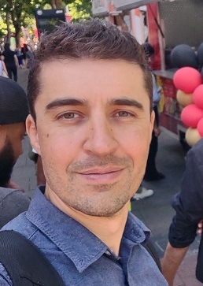

Leonardo Bassi | WDD 130
Hello everyone, my name is Leonardo Bassi. I am currently live in the UK but am originally from Sao Paulo, Brazil. I basically enjoy all physical activities that involve challenge and competition, both indoor and outdoor. I go to the gym regularly and I make sure to eat well and healthily to keep myself both intellectually and physically healthy. I look forward to starting this journey with you over the next seven weeks.